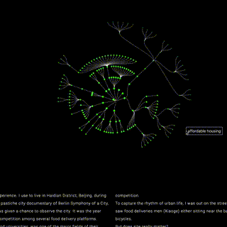

TECH
科技
ARCH
建筑
Y.LIU
WORD
写作
Data Visualization of Dogs 城市狗数据可视化
Data Science 数据科学 ｜ 23S
Data Visualization Tool 艺术数据可视化工具开发
Web Dev 网页开发 ｜ 23S
Revisiting Pink Floyd 再访品克弗洛伊德
Web Dev 网页开发 ｜ 23S
Data Visualization 城市数据可视化
Data Science 数据科学 ｜ 23S
Voiced Terrain 声纹景观
Audio Visualization 交互声音图像 ｜ 23S
Emoji Food Classifier 表情食物分类器
Machine Learning 机器学习 ｜ 22S
A Flanneled Terrain of Slow Violence 一个慢性暴力的场所
Machine Learning 机器学习 ｜ 22S
A Cartography of Urban Light 城市明亮地图
Data 数据可视化 ｜ 22S
Particle Text 粒子文字
Web Dev 网页开发 ｜ 22S